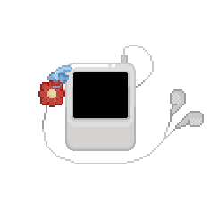
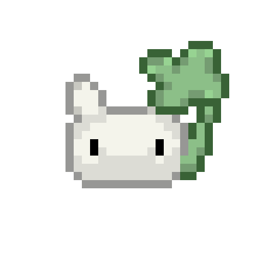

Playlist :
Serotonin Boost ☘︎
Brain Fuel
Analog Love
Serotonin Boost
⤵
As a human, I do not always have positive thoughts or stable emotions. There are many days when I feel like I am not truly useful to anyone — like a small coin dropped onto the street, too insignificant for anyone to even notice. Thankfully, I was born in an era where music can be found so easily, even when I am simply lying in bed doing nothing at all. Somehow, songs have a way of slowly bringing my spirit back again. And... this playlist is filled with songs I always listen to whenever I need to bring my mood back again. Yah...
Brain Fuel
⤵
Sometimes I get tired of my own thoughts, my own expectations, and everything I still have not managed to become. And whenever that happens, I end up returning to these songs again and again. Because somehow, they always remind me that it is okay to move forward slowly. I guess that is why these songs mean so much to me. Huee...
Analog Love
⤵
I don't know how to say that I'm in love with someone. Perhaps it's because those three words, “I love you,” could never fully justify the way I feel about them. And maybe that is why I always find myself turning to songs instead. Somehow, there is always a song that understands me better than I understand myself — a song that says everything I could never bring myself to say out loud. This playlist, at least maybe, is the closest thing I have to a confession. It tells the story of every stage of my journey of falling in love: meeting someone unexpectedly, slowly letting them become a part of me, loving them more deeply than I intended to, and then watching everything quietly drift away. Until one day, all that is left is silence — the kind of silence that stays after someone important is gone. But even then, I still want to remember it kindly. Because to love is never a mistake. So, that's why I made this playlist, hue!
